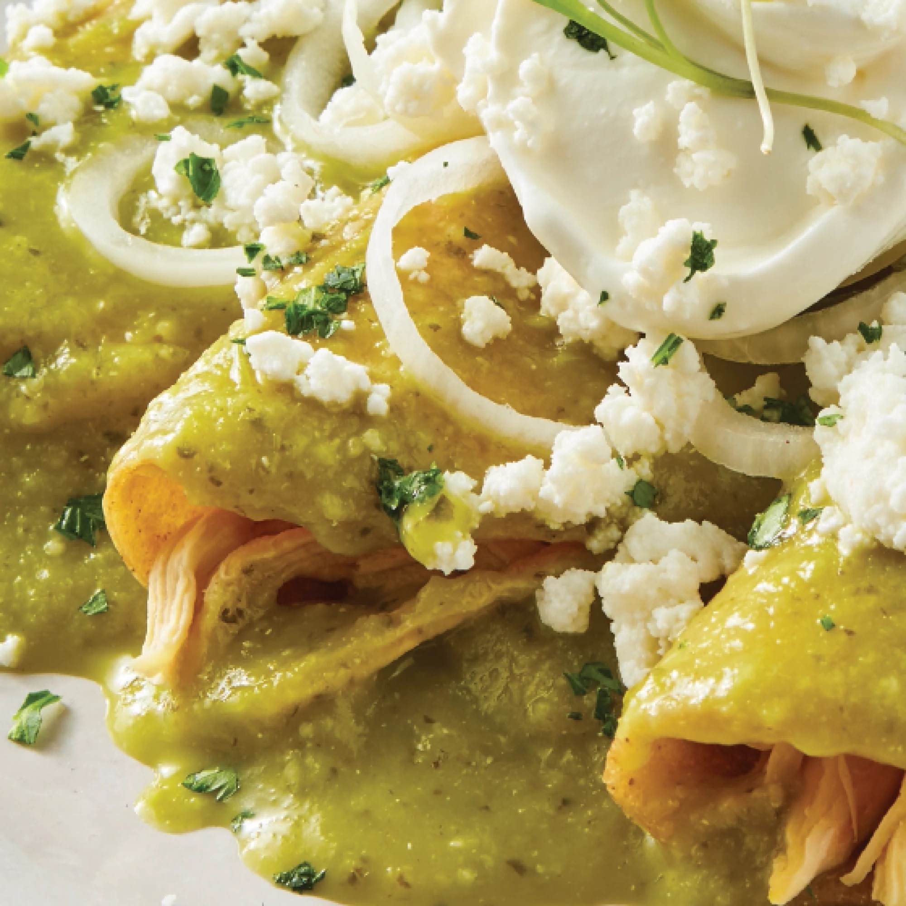

Enchiladas

Description
The delicious mexican dish, delighting people all ages has finally come to YOUR table
for the first time. Imagine the traditional mexican corn tortilla filled with the
most beautifully cooked juicy chicken, topped with our most amazing traditional salsa
verde, chopped onions, “quesillo”, and sour cream. So, if you’re
already craving it, let's get to the task:
Ingredients
- 1 kg corn tortillas
- 2 boneless chicken breast
- 2 knorr swiss chicken soup cubes
- 3 tomatillos
- 1 big white onion
- 5 garlic cloves
- 2 serrano chiles
- 5 jalapeño chiles
- cream and quesillo
Steps
- Boil the chicken together with 2 garlic cloves, a quarter of the onion
and the chicken soup cubes
- In a pan grill the tomatillos, a quarter onion, 3 garlic cloves,
and all of the chiles until they are a little bit burnt
- Take everything out of the fire and put it in a blender with a quarter cup
of water.
- Make some tacos with the tortillas and the shredded chicken and put them in
plate, pour some salsa verde straight form your blender, top-it with some
chopped onion, cream and cheese, and enjoy.
- You can prepare some white rice as a side
Home